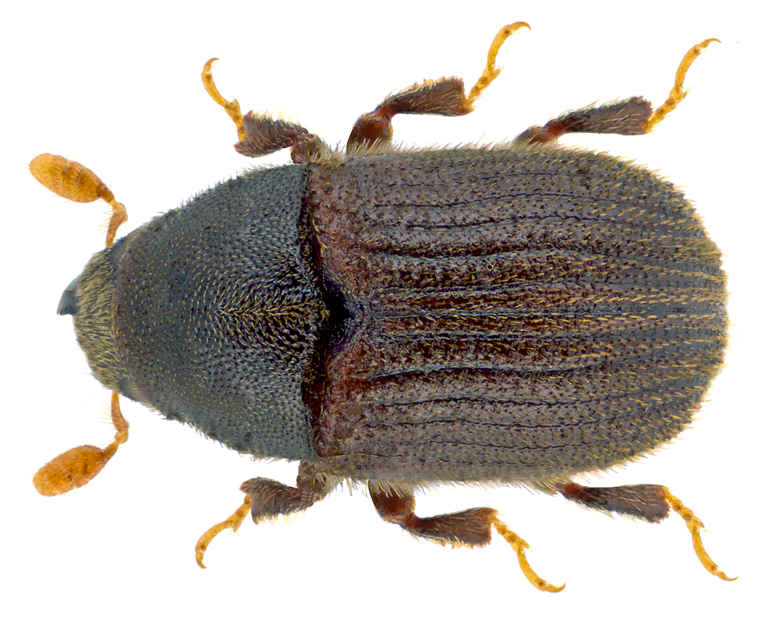
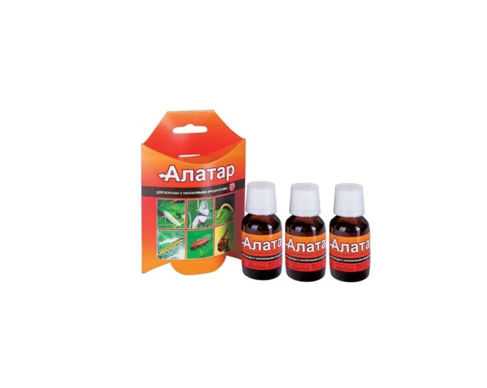

Вредители
Туевый лубоед (Phloeosinus thujae)
Мелкий жук из семейства долгоносиков (Curculionidae), подсемейства короедов (Scolytidae), который наносит серьёзный вред туям.
Как выглядит: очень маленький жук размером 1,5–2 мм. Тело тёмно-коричневое или чёрное. У самцов на надкрыльях есть относительно крупные зазубренные зубцы. Личинки безногие, с серповидно изогнутым телом и мозолевидными подушечками; голова склеротизированная и темнее тела.

Туевый лубоед. Фото: Udo Schmidt, Wikimedia Commons, CC BY-SA 2.0
Как развивается: весной самки протачивают ходы под корой туи и после оплодотворения откладывают яйца. Личинки прокладывают собственные галереи, питаясь заболонью и заполняя ходы опилками и экскрементами. Затем личинка окукливается, и из куколки выходит взрослый жук. Молодые особи питаются молодыми побегами и лубяными волокнами под корой.
Чем опасен: повреждения могут привести к отмиранию отдельных веточек или к полной гибели дерева. Хвоя сначала становится соломенной, затем буреет. Особенно опасно сочетание тёплого апреля и холодного мая: вредитель продолжает питаться, а корни из-за ночных заморозков не обеспечивают растение достаточным питанием.
Важно: лубоеды могут атаковать не только ослабленные, но и здоровые растения, особенно в первый год после посадки. Риск повышается при замокании или пересушивании корневой системы, а также после заморозков.
Профилактика:
- Выбирайте здоровые саженцы без видимых повреждений и отверстий на стволе.
- Обеспечьте правильный полив, подкормку и хороший дренаж.
- Регулярно осматривайте растения, особенно весной.
При обнаружении вредителя: опрыскивайте инсектицидами системного действия. Обработки проводят ранней весной при температуре +10…+15 °C, с интервалом примерно три недели до конца сезона. Чередуйте препараты с разными действующими веществами, чтобы у вредителя не выработалась устойчивость.
При сильном поражении: иногда рекомендуют уничтожить поражённое дерево вместе с вредителем, чтобы защитить соседние растения.
Важные рекомендации:
- Не путайте повреждения лубоедов с грибковыми заболеваниями или механическими повреждениями.
- При покупке новых саженцев тщательно их осматривайте.
- Не допускайте застоя воды, обеспечьте хороший дренаж и не загущайте посадки.
- При признаках поражения не затягивайте: обратитесь к фитопатологу или агроному, чтобы подобрать препараты и схему обработок.
Препарат «Алатар»: ссылка на препарат на Озоне.

Нажмите на фото — откроется страница препарата на Озоне
Тля и ложнощитовка
Признаки: липкий налёт, скрученные побеги, мелкие насекомые или бурые щитки на ветвях.
Что делать: смыть тлю струёй воды, при сильном поражении обработать инсектицидом по инструкции.